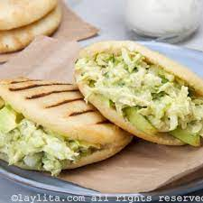

La Reina Pepiada

Receta fácil para preparar la famosa
arepa reina pepiada en casa. Esta deliciosa arepa
venezolana lleva un relleno de pollo con aguacate.
Ingredients
Para las arepas
- 2 tazas de harina de maíz precocida 290 g.
- 2 ¼ de tazas de agua tibia 510 ml
- 1 cucharadita de sal
- 2 cucharadas de aceite
para el relleno de pollo y aguacate
- 1 pechuga de pollo asada desmechada, 300 g.
- 2 ramitas de cilantro
- 1 diente de ajo pequeño
- 1 cebolla mediana 80 g.
- 1 aguacate maduro 300 g.
- 3 cucharadas de mayonesa
- 1 cucharada de aceite de oliva
- 1 cucharada de limón
- Sal al gusto